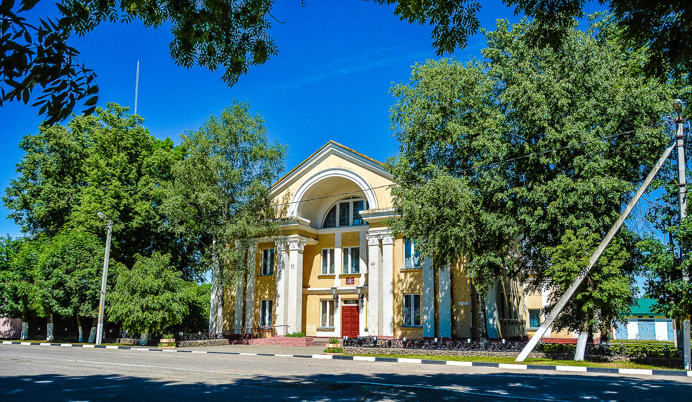

I was born in a small town Chashniki (Vitebsk region, Republic of Belarus). Look at this small list of main attractions...
-
- The Temple of the Transformation of the Holy Virgin
- Interesting because it was built at the beginning of the XIXth century.
-
- Railway station
- This beautiful building appeared right after the October Revolution - 1917.
- 
- State House of Culture
- It contains a small museum about our region during the WWII period.